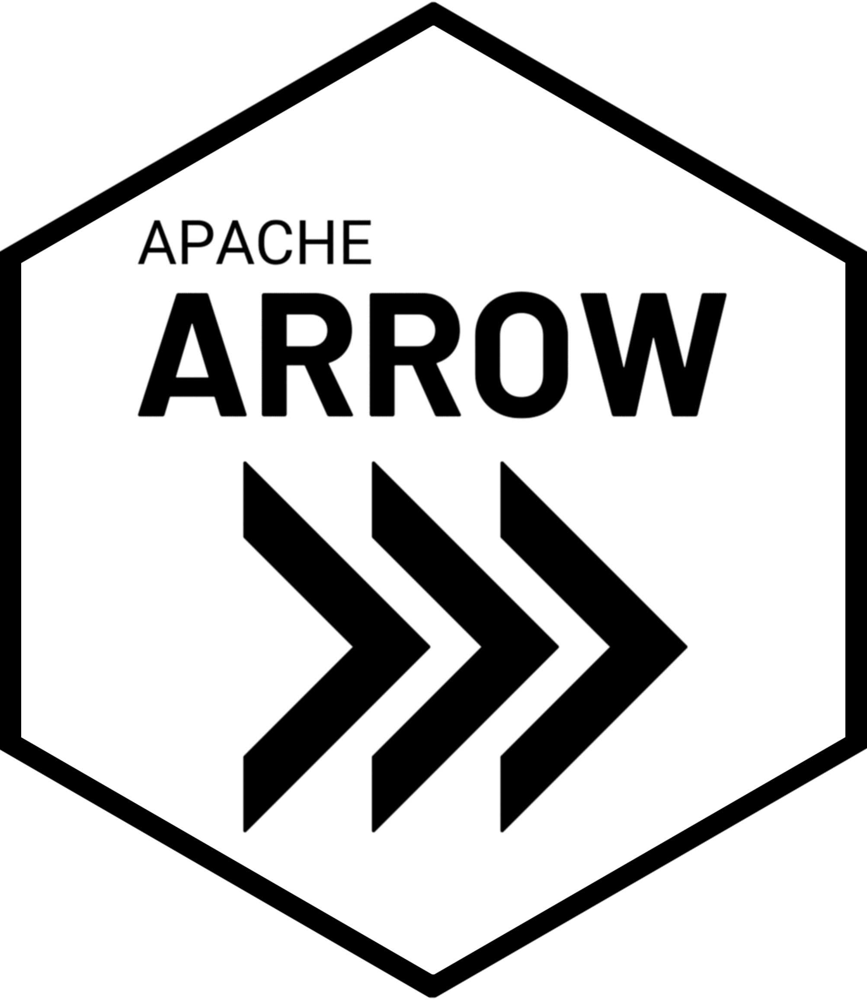
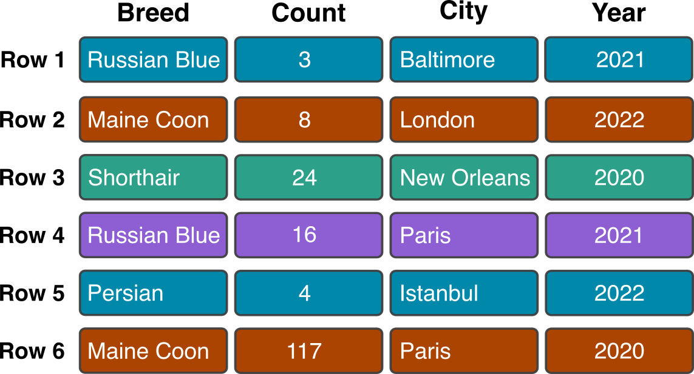
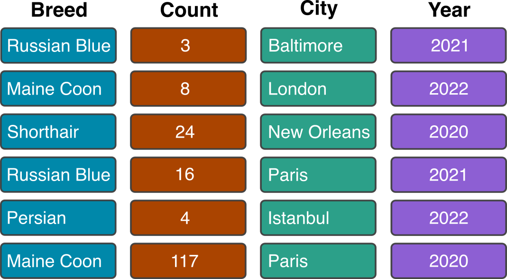
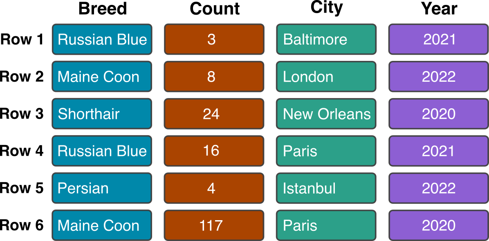
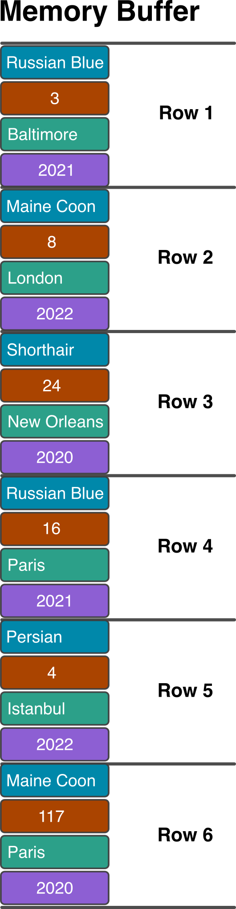
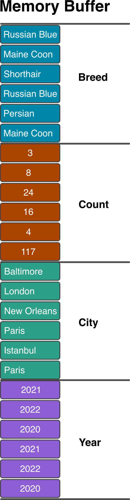
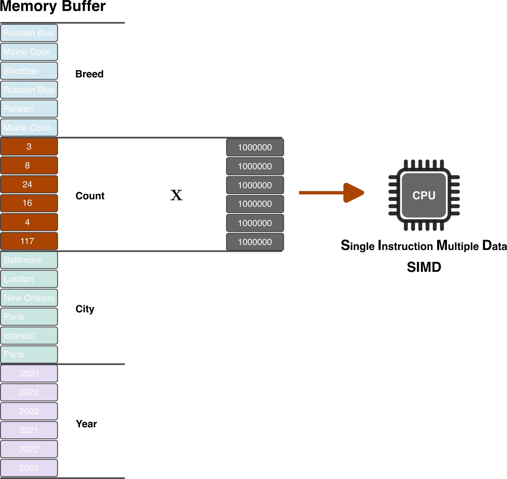

cats |>
mutate(count_million = Count * 1000000)Big Data in R with Arrow
Larger-than-Memory Data Analysis with Apache Arrow
What makes big data BIG?
Tabular data often hundreds to thousands of rows.
The maximum number of row in an Excel worksheet is 1,048,576.
Data can easily be > 100 million rows.
A definition … sort of
- Data that is too large to fit into memory.
- e.g. a 40 GB
.csvbut only 16 GB RAM. - A rule of thumb: your memory should be twice the size of your data.
- Data that fits into memory but is prohibitively slow to analyze.
Apache Arrow
Apache Arrow is a universal columnar format and multi-language toolbox for fast data interchange and in-memory analytics.
- Columnar is Fast!
- Arrow keeps data in a single format that can be accessed by multiple programming languages and platforms without having to copy and convert the data.
- Arrow works with multiple programming languages, including
C++,C#,Go,Java,Julia,Python, and of courseR.



Row in Memory


Columnar in Memory

Convert all cat counts to millions

Row
- Heterogeneous Data Types
- Better for transactional processing (Databases)
Column
- Homogeneous Data Types
- Compressible
- Single Instruction Multiple Data (SIMD) Capable
Installing {arrow}
- Install arrow by typing
install.packages("arrow") - To use dplyr pipelines both arrow and dplyr must be loaded
library(arrow)
Attaching package: 'arrow'The following object is masked from 'package:utils':
timestamplibrary(dplyr)
Attaching package: 'dplyr'The following objects are masked from 'package:stats':
filter, lagThe following objects are masked from 'package:base':
intersect, setdiff, setequal, unionLets explore some big data
- data.seattle.gov: Seattle Public Library checkouts by title for physical and electronic items.
- Monthly count of library checkouts since April 2005.
- 46.9 million rows as of Feb 6th, 2025.
seattle-library-checkouts.csv: 10.7 GB .csv file
Dataset Contents
/* echo: false */
.reveal table {
font-size: small;
}
Attaching package: 'kableExtra'The following object is masked from 'package:dplyr':
group_rows| usageclass | checkouttype | materialtype | checkoutyear | checkoutmonth | checkouts | title | creator | subjects | publisher | publicationyear |
|---|---|---|---|---|---|---|---|---|---|---|
| Digital | OverDrive | EBOOK | 2018 | 1 | 22 | Enemy of the State | Vince Flynn | Fiction, Literature, Thriller | Simon & Schuster, Inc. | 2017 |
| Digital | Hoopla | TELEVISION | 2018 | 1 | 1 | Newspaper Mom / Cucumber in Rio / Donut Raffle | NA | Children's | DHX Media | NA |
| Physical | Horizon | SOUNDDISC | 2018 | 1 | 1 | Mono / the Mavericks. | Mavericks (Musical group) | Country music 2011 2020 | Valory, | [2015] |
| Digital | OverDrive | EBOOK | 2018 | 1 | 2 | Anna Karenina | Leo Tolstoy | Classic Literature, Fiction, Literature | Penguin Group (USA), Inc. | 2009 |
| Digital | OverDrive | EBOOK | 2018 | 1 | 1 | Dragon: Vlad Series, Book 8 | Steven Brust | Fantasy, Fiction | Macmillan Publishers | 2015 |
| Digital | OverDrive | EBOOK | 2018 | 1 | 1 | Little Dorrit | Charles Dickens | Classic Literature, Fiction, Literature | Random House, Inc. | 2012 |
| Digital | OverDrive | EBOOK | 2018 | 1 | 2 | The Inside Out Man | Fred Strydom | Fiction, Horror, Suspense, Thriller | Lightning Source Inc | 2017 |
| Physical | Horizon | BOOK | 2018 | 2 | 1 | Spain : a history / edited by Raymond Carr. | NA | Spain History | Oxford University Press, | 2000. |